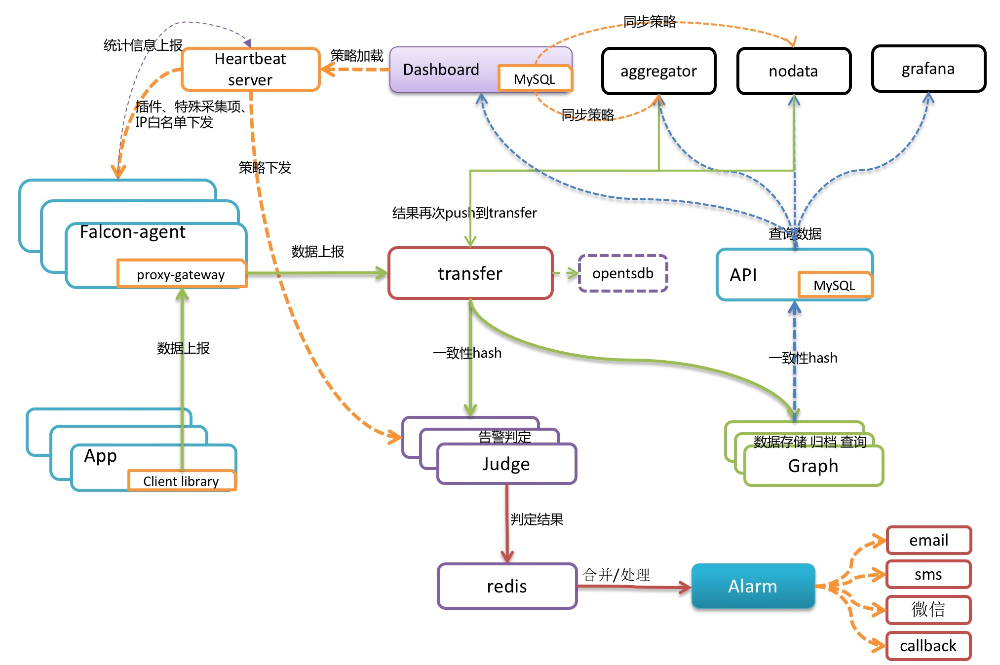

14、open-falcon
一、介绍
监控系统是整个运维环节，乃至整个产品生命周期中最重要的一环，事前及时预警发现故障，事后提供翔实的数据用于追查定位问题。监控系统作为一个成熟的运维产品，业界有很多开源的实现可供选择。当公司刚刚起步，业务规模较小，运维团队也刚刚建立的初期，选择一款开源的监控系统，是一个省时省力，效率最高的方案。之后，随着业务规模的持续快速增长，监控的对象也越来越多，越来越复杂，监控系统的使用对象也从最初少数的几个SRE，扩大为更多的DEVS，SRE。这时候，监控系统的容量和用户的“使用效率”成了最为突出的问题。
监控系统业界有很多杰出的开源监控系统。zabbix，随着业务的快速发展，以及互联网公司特有的一些需求，现有的开源的监控系统在性能、扩展性、和用户的使用效率方面，已经无法支撑了。
因此选用了小米的监控系统：open-falcon。
二、特点
1、强大灵活的数据采集：自动发现，支持falcon-agent、snmp、支持用户主动push、用户自定义插件支持、opentsdb data model like（timestamp、endpoint、metric、key-value tags）
2、水平扩展能力：支持每个周期上亿次的数据采集、告警判定、历史数据存储和查询
3、高效率的告警策略管理：高效的portal、支持策略模板、模板继承和覆盖、多种告警方式、支持callback调用
4、人性化的告警设置：最大告警次数、告警级别、告警恢复通知、告警暂停、不同时段不同阈值、支持维护周期
5、高效率的graph组件：单机支撑200万metric的上报、归档、存储（周期为1分钟）
6、高效的历史数据query组件：采用rrdtool的数据归档策略，秒级返回上百个metric一年的历史数据
7、dashboard：多维度的数据展示，用户自定义Screen
8、高可用：整个系统无核心单点，易运维，易部署，可水平扩展
9、开发语言： 整个系统的后端，全部golang编写，portal和dashboard使用python编写。
三、架构

每台服务器，都有安装falcon-agent，falcon-agent是一个golang开发的daemon程序，用于自发现的采集单机的各种数据和指标，这些指标包括不限于以下几个方面，共计200多项指标。
CPU相关
磁盘相关
IO
Load
内存相关
网络相关
端口存活、进程存活
ntp offset（插件）
某个进程资源消耗（插件）
netstat、ss 等相关统计项采集
机器内核配置参数
只要安装了falcon-agent的机器，就会自动开始采集各项指标，主动上报，不需要用户在server做任何配置（这和zabbix有很大的不同），这样做的好处，就是用户维护方便，覆盖率高。当然这样做也会server端造成较大的压力，不过open-falcon的服务端组件单机性能足够高，同时都可以水平扩展，所以自动多采集足够多的数据，反而是一件好事情，对于SRE和DEV来讲，事后追查问题，不再是难题。
另外，falcon-agent提供了一个proxy-gateway，用户可以方便的通过http接口，push数据到本机的gateway，gateway会帮忙高效率的转发到server端。
四、数据模型
Data Model是否强大，是否灵活，对于监控系统用户的“使用效率”至关重要。比如以zabbix为例，上报的数据为hostname（或者ip）、metric，那么用户添加告警策略、管理告警策略的时候，就只能以这两个维度进行。举一个最常见的场景：
hostA的磁盘空间，小于5%，就告警。一般的服务器上，都会有两个主要的分区，根分区和home分区，在zabbix里面，就得加两条规则；如果是hadoop的机器，一般还会有十几块的数据盘，还得再加10多条规则，这样就会痛苦，不幸福，不利于自动化（当然zabbix可以通过配置一些自动发现策略来搞定这个，不过比较麻烦）。
五、数据收集
transfer，接收客户端发送的数据，做一些数据规整，检查之后，转发到多个后端系统去处理。在转发到每个后端业务系统的时候，transfer会根据一致性hash算法，进行数据分片，来达到后端业务系统的水平扩展。
transfer 提供jsonRpc接口和telnet接口两种方式，transfer自身是无状态的，挂掉一台或者多台不会有任何影响，同时transfer性能很高，每分钟可以转发超过500万条数据。
transfer目前支持的业务后端，有三种，judge、graph、opentsdb。judge是我们开发的高性能告警判定组件，graph是我们开发的高性能数据存储、归档、查询组件，opentsdb是开源的时间序列数据存储服务。可以通过transfer的配置文件来开启。
transfer的数据来源，一般有三种：
1、falcon-agent采集的基础监控数据
2、falcon-agent执行用户自定义的插件返回的数据
3、client library：线上的业务系统，都嵌入使用了统一的perfcounter.jar，对于业务系统中每个RPC接口的qps、latency都会主动采集并上报
说明：上面这三种数据，都会先发送给本机的proxy-gateway，再由gateway转发给transfer。
基础监控是指只要是个机器(或容器)就能加的监控，比如cpu mem net io disk等，这些监控采集的方式固定，不需要配置，也不需要用户提供额外参数指定，只要agent跑起来就可以直接采集上报上去； 非基础监控则相反，比如端口监控，你不给我端口号就不行，不然我上报所有65535个端口的监听状态你也用不了，这类监控需要用户配置后才会开始采集上报的监控（包括类似于端口监控的配置触发类监控，以及类似于mysql的插件脚本类监控），一般就不算基础监控的范畴了。
六、 报警
报警判定，是由judge组件来完成。用户在web portal来配置相关的报警策略，存储在MySQL中。heartbeat server 会定期加载MySQL中的内容。judge也会定期和heartbeat server保持沟通，来获取相关的报警策略。
heartbeat sever不仅仅是单纯的加载MySQL中的内容，根据模板继承、模板项覆盖、报警动作覆盖、模板和hostGroup绑定，计算出最终关联到每个endpoint的告警策略，提供给judge组件来使用。
transfer转发到judge的每条数据，都会触发相关策略的判定，来决定是否满足报警条件，如果满足条件，则会发送给alarm，alarm再以邮件、短信、米聊等形式通知相关用户，也可以执行用户预先配置好的callback地址。
用户可以很灵活的来配置告警判定策略，比如连续n次都满足条件、连续n次的最大值满足条件、不同的时间段不同的阈值、如果处于维护周期内则忽略 等等。
另外也支持突升突降类的判定和告警。
七、 API
到这里，数据已经成功的存储在了graph里。如何快速的读出来呢，读过去1小时的，过去1天的，过去一月的，过去一年的，都需要在1秒之内返回。
这些都是靠graph和API组件来实现的，transfer会将数据往graph组件转发一份，graph收到数据以后，会以rrdtool的数据归档方式来存储，同时提供查询RPC接口。
API面向终端用户，收到查询请求后，会去多个graph里面，查询不同metric的数据，汇总后统一返回给用户。
八、存储
对于监控系统来讲，历史数据的存储和高效率查询，永远是个很难的问题！
数据量大：目前我们的监控系统，每个周期，大概有2000万次数据上报（上报周期为1分钟和5分钟两种，各占50%），一天24小时里，从来不会有业务低峰，不管是白天和黑夜，每个周期，总会有那么多的数据要更新。
写操作多：一般的业务系统，通常都是读多写少，可以方便的使用各种缓存技术，再者各类数据库，对于查询操作的处理效率远远高于写操作。而监控系统恰恰相反，写操作远远高于读。每个周期几千万次的更新操作，对于常用数据库（MySQL、postgresql、mongodb）都是无法完成的。
高效率的查：我们说监控系统读操作少，是说相对写入来讲。监控系统本身对于读的要求很高，用户经常会有查询上百个meitric，在过去一天、一周、一月、一年的数据。如何在1秒内返回给用户并绘图，这是一个不小的挑战。
open-falcon在这块，投入了较大的精力。我们把数据按照用途分成两类，一类是用来绘图的，一类是用户做数据挖掘的。
对于绘图的数据来讲，查询要快是关键，同时不能丢失信息量。对于用户要查询100个metric，在过去一年里的数据时，数据量本身就在那里了，很难1秒之类能返回，另外就算返回了，前端也无法渲染这么多的数据，还得采样，造成很多无谓的消耗和浪费。我们参考rrdtool的理念，在数据每次存入的时候，会自动进行采样、归档。我们的归档策略如下，历史数据保存5年。同时为了不丢失信息量，数据归档的时候，会按照平均值采样、最大值采样、最小值采样存三份。